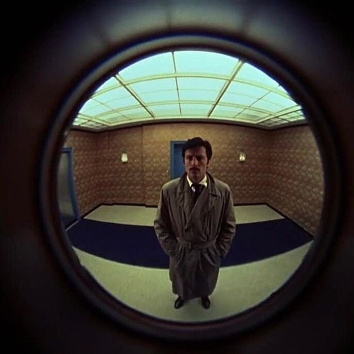

01/07
Guía · Decisión
¿Automatización, asistente o agente?
Tu proceso necesita uno. Subir de nivel cuesta más y arriesga más.
1Automatización
2Asistente
3Agente
Guía · Decisión
Tu proceso necesita uno. Subir de nivel cuesta más y arriesga más.

AutomatizaciónReglas fijas. Los mismos pasos, siempre, aunque uno use IA.
DecideLas reglasAsistenteUna persona pide y la IA responde. La persona decide qué hacer.
DecideLa personaAgenteLa IA decide los pasos y usa herramientas para actuar.
DecideLa IAAgente según Anthropic: el modelo dirige sus propios procesos y herramientas. Anthropic las vende.
¿Los pasos son siempre iguales?Si sí, bastan reglas.
¿Hay que juzgar?Leer, interpretar o redactar pide un modelo.
¿Tiene que actuar sobre sistemas?Enviar, cobrar o cambiar datos sube el nivel.
¿Qué pasa si se equivoca?Define cuánto control humano lleva.
1 pasos iguales · 2 juicio · 3 actúa · 4 error
Guardar cada factura que llega por correo y anotarla en una hoja.
Redactar respuestas a clientes que preguntan cosas distintas.
Gestionar un reclamo: leer el caso, revisar el pedido y reembolsar.
Procesos inventados, no son de ningún cliente.
“Buscar la solución más simple posible y subir la complejidad solo cuando haga falta.”Anthropic, Building effective agents, 2024 (traducción de Plogy). Anthropic vende herramientas de agentes.

Escríbenos PROCESO por DM.